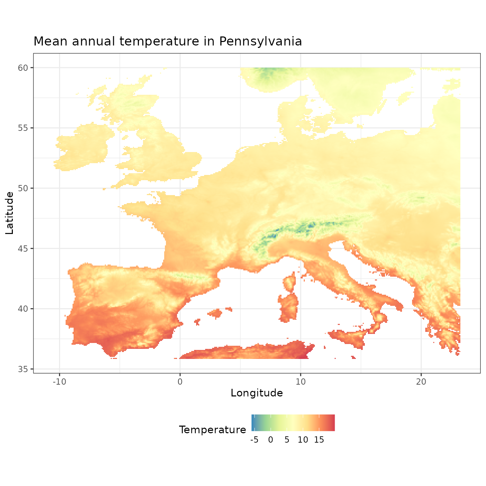

The aim of the funbiogeopackage is to help users with analyses in Functional biogeography (Violle et al. 2014). It helps to load and combine data, computing trait coverage, as well as computing functional diversity indices, drawing maps, correlate them with the environment, and upscaling assemblages.
Initial needed data
The package funbiogeo requires three different datasets to proceed with the analyses:
- the site x locations dataset (example dataset:
site_locations) - the site x species dataset (example dataset:
site_species) - the species x traits dataset (example dataset:
species_traits)
Let’s take a look at each of these datasets.
Site x Locations
This dataset contains spatial coordinates of sites (points) of the study area. It can be either a matrix or a data.frame and row names must contain sites names. It must contain at least two columns: the longitude and the latitude of sites. This dataset must contain unique sites. Additional columns are accepted must will be ignored by funbiogeo.
The package funbiogeo comes with the example dataset site_locations.
## Load site x locations example dataset ----
data("site_locations", package = "funbiogeo")| site | x | y |
|---|---|---|
| fb_33 | 5.771820 | 59.59736 |
| fb_35 | 6.771820 | 59.59736 |
| fb_36 | 7.271820 | 59.59736 |
| fb_37 | 7.771820 | 59.59736 |
| fb_38 | 8.271821 | 59.59736 |
| fb_39 | 8.771821 | 59.59736 |
| fb_40 | 9.271821 | 59.59736 |
| fb_41 | 9.771821 | 59.59736 |
| fb_42 | 10.271821 | 59.59736 |
| fb_43 | 10.771821 | 59.59736 |
## First column contains sites names ----
site_locations[1:4, 1]
#> [1] "fb_33" "fb_35" "fb_36" "fb_37"To create your own site x locations dataset you can use the function fb_format_site_locations(). See below the section Long format.
Site x Species
This dataset contains species occurrences/abundance/coverage at sites (points) of the study area. It can be either a matrix or a data.frame and row names must contain sites names. Columns must contain only species distribution information and sites must be unique. No additional columns are accepted.
The package funbiogeo comes with the example dataset site_species.
## Load site x species example dataset ----
data("site_species", package = "funbiogeo")| site | sp_001 | sp_002 | sp_003 |
|---|---|---|---|
| fb_33 | 1 | 0 | 0 |
| fb_35 | 1 | 0 | 0 |
| fb_36 | 1 | 0 | 0 |
| fb_37 | 1 | 0 | 0 |
| fb_38 | 1 | 0 | 0 |
| fb_39 | 1 | 0 | 0 |
| fb_40 | 1 | 0 | 0 |
| fb_41 | 1 | 0 | 0 |
| fb_42 | 1 | 0 | 0 |
| fb_43 | 1 | 0 | 0 |
## First column contains sites names ----
site_species[1:4, 1]
#> [1] "fb_33" "fb_35" "fb_36" "fb_37"
## Column names after the first one contain species names ----
colnames(site_species)[2:4]
#> [1] "sp_001" "sp_002" "sp_003"To create your own site x species dataset you can use the function fb_format_site_species(). See below the section Long format.
Species x Traits
This dataset contains traits values for studied species. It can be either a matrix or a data.frame and row names must contain species names. Columns must contain only traits variables and species must be unique. No additional columns are accepted.
Note that traits values cannot vary across sites for a given species.
The package funbiogeo comes with the example dataset species_traits.
## Load species x traits example dataset ----
data("species_traits", package = "funbiogeo")| species | adult_body_mass | gestation_length | litter_size | max_longevity | sexual_maturity_age | diet_breadth |
|---|---|---|---|---|---|---|
| sp_001 | 461900.76 | 235.00 | 1.25 | 324 | 668.20 | 1 |
| sp_002 | 21.11 | 19.89 | 5.64 | 48 | 76.04 | NA |
| sp_003 | NA | NA | NA | NA | NA | NA |
| sp_004 | NA | NA | NA | NA | NA | NA |
## First column contains species names ----
species_traits[1:4, 1]
#> [1] "sp_001" "sp_002" "sp_003" "sp_004"
## Column names (apart from the first) contain traits names ----
colnames(species_traits)[-1]
#> [1] "adult_body_mass" "gestation_length" "litter_size"
#> [4] "max_longevity" "sexual_maturity_age" "diet_breadth"To create your own species x traits dataset you can use the function fb_format_species_traits(). See below the section Long format.
Long format
If your data are not spread into three datasets you can use the functions fb_format_*() to create these specific datasets. This implies that your data are structured into a long table, i.e. one row corresponds to the occurrence/abundance/coverage of one species at one site. This also implies that some variables are repeated across the table (e.g. sites coordinates, species traits).
Let’s take an example
## Path to example raw dataset ----
filename <- system.file("extdata", "raw_mammals_data.csv", package = "funbiogeo")
## Read CSV file ----
all_data <- read.csv(filename)| site | longitude | latitude | species | count | adult_body_mass | gestation_length | litter_size | max_longevity | sexual_maturity_age | diet_breadth |
|---|---|---|---|---|---|---|---|---|---|---|
| fb_100 | 5.77182 | 59.09736 | sp_006 | 1 | 21.90 | 23.68 | 5.16 | 52.8 | 57.93 | 4 |
| fb_100 | 5.77182 | 59.09736 | sp_033 | 1 | 777.95 | 36.98 | 4.64 | 168.0 | 265.80 | 8 |
| fb_100 | 5.77182 | 59.09736 | sp_078 | 1 | 19.30 | 19.60 | 5.54 | 72.0 | 64.71 | 1 |
| fb_1000 | 20.27182 | 52.59736 | sp_001 | 1 | 461900.76 | 235.00 | 1.25 | 324.0 | 668.20 | 1 |
| fb_1000 | 20.27182 | 52.59736 | sp_002 | 1 | 21.11 | 19.89 | 5.64 | 48.0 | 76.04 | NA |
| fb_1000 | 20.27182 | 52.59736 | sp_005 | 1 | 31.60 | 24.50 | 4.94 | 48.0 | 43.27 | NA |
| fb_1000 | 20.27182 | 52.59736 | sp_006 | 1 | 21.90 | 23.68 | 5.16 | 52.8 | 57.93 | 4 |
| fb_1000 | 20.27182 | 52.59736 | sp_010 | 1 | 8.31 | NA | 1.73 | 252.0 | NA | 1 |
| fb_1000 | 20.27182 | 52.59736 | sp_013 | 1 | 31756.51 | 63.50 | 4.98 | 354.0 | 679.37 | 1 |
| fb_1000 | 20.27182 | 52.59736 | sp_016 | 1 | 22502.01 | 196.00 | 1.79 | 204.0 | 400.97 | NA |
Formatting site x locations data
The function fb_format_site_locations() extracts sites coordinates from this long table to create the site x locations dataset. Note that one site must have one unique longitude x latitude value.
## Format site x locations data ----
site_locations <- fb_format_site_locations(input_data = all_data,
site = "site",
longitude = "longitude",
latitude = "latitude",
na_rm = FALSE)
## Preview ----
head(site_locations)
#> Simple feature collection with 6 features and 1 field
#> Geometry type: POINT
#> Dimension: XY
#> Bounding box: xmin: 52.09736 ymin: -9.728179 xmax: 59.09736 ymax: 21.27182
#> Geodetic CRS: WGS 84
#> site geometry
#> 1 fb_100 POINT (59.09736 5.771821)
#> 4 fb_1000 POINT (52.59736 20.27182)
#> 54 fb_1001 POINT (52.59736 20.77182)
#> 103 fb_1002 POINT (52.59736 21.27182)
#> 152 fb_1007 POINT (52.09736 -9.728179)
#> 174 fb_1008 POINT (52.09736 -9.228179)Formatting site x species data
The function fb_format_site_species() extracts species occurrence/abundance/coverage from this long table to create the site x species dataset. Note that one species must have been observed one time at one site (the package funbiogeo does not yet consider temporal survey).
## Format site x species data ----
site_species <- fb_format_site_species(data = all_data,
site = "site",
species = "species",
value = "count",
na_to_zero = TRUE)
## Preview ----
head(site_species)
#> site sp_006 sp_033 sp_078 sp_001 sp_002 sp_005 sp_010 sp_013 sp_016 sp_017
#> 1 fb_100 1 1 1 0 0 0 0 0 0 0
#> 2 fb_1000 1 0 1 1 1 1 1 1 1 1
#> 3 fb_1001 1 0 1 1 1 1 1 1 1 1
#> 4 fb_1002 1 0 1 1 1 1 1 1 1 1
#> 5 fb_1007 1 1 1 0 0 0 0 0 0 1
#> 6 fb_1008 1 1 1 0 0 0 0 0 0 0
#> sp_026 sp_032 sp_034 sp_038 sp_048 sp_055 sp_056 sp_057 sp_059 sp_060 sp_061
#> 1 0 0 0 0 0 0 0 0 0 0 0
#> 2 1 1 1 1 1 1 1 1 1 1 1
#> 3 1 1 1 1 1 1 1 1 1 1 1
#> 4 1 1 1 1 1 1 1 1 1 1 1
#> 5 1 0 0 0 0 0 1 1 0 0 0
#> 6 1 0 0 0 0 0 1 1 0 0 0
#> sp_071 sp_073 sp_081 sp_082 sp_084 sp_085 sp_086 sp_093 sp_095 sp_096 sp_098
#> 1 0 0 0 0 0 0 0 0 0 0 0
#> 2 1 1 1 1 1 1 1 1 1 1 1
#> 3 1 1 1 1 1 1 1 1 1 1 0
#> 4 1 1 1 1 1 1 1 1 1 1 0
#> 5 0 0 0 1 0 0 1 0 0 1 0
#> 6 0 0 0 1 0 0 1 0 0 1 0
#> sp_099 sp_100 sp_104 sp_105 sp_106 sp_110 sp_111 sp_112 sp_113 sp_114 sp_119
#> 1 0 0 0 0 0 0 0 0 0 0 0
#> 2 1 1 1 1 1 1 1 1 1 1 1
#> 3 1 1 1 1 1 1 1 1 1 1 1
#> 4 1 1 1 1 1 1 1 1 1 1 1
#> 5 1 1 1 0 0 0 1 1 1 0 1
#> 6 1 1 1 0 0 0 1 1 1 0 1
#> sp_129 sp_130 sp_133 sp_137 sp_141 sp_144 sp_148 sp_149 sp_050 sp_124 sp_051
#> 1 0 0 0 0 0 0 0 0 0 0 0
#> 2 1 1 1 1 1 1 1 1 0 0 0
#> 3 1 1 1 1 1 1 1 1 0 0 0
#> 4 1 1 1 1 1 1 1 1 0 0 0
#> 5 1 0 0 1 0 0 0 1 1 1 0
#> 6 1 0 0 1 0 0 0 1 1 1 0
#> sp_147 sp_077 sp_123 sp_039 sp_091 sp_118 sp_022 sp_120 sp_134 sp_087 sp_035
#> 1 0 0 0 0 0 0 0 0 0 0 0
#> 2 0 0 0 0 0 0 0 0 0 0 0
#> 3 0 0 0 0 0 0 0 0 0 0 0
#> 4 0 0 0 0 0 0 0 0 0 0 0
#> 5 0 0 0 0 0 0 0 0 0 0 0
#> 6 0 0 0 0 0 0 0 0 0 0 0
#> sp_019 sp_020 sp_024 sp_097 sp_036 sp_030 sp_088 sp_007 sp_008 sp_128 sp_028
#> 1 0 0 0 0 0 0 0 0 0 0 0
#> 2 0 0 0 0 0 0 0 0 0 0 0
#> 3 0 0 0 0 0 0 0 0 0 0 0
#> 4 0 0 0 0 0 0 0 0 0 0 0
#> 5 0 0 0 0 0 0 0 0 0 0 0
#> 6 0 0 0 0 0 0 0 0 0 0 0
#> sp_131 sp_089 sp_139 sp_103 sp_109 sp_054 sp_092 sp_083 sp_074 sp_076 sp_122
#> 1 0 0 0 0 0 0 0 0 0 0 0
#> 2 0 0 0 0 0 0 0 0 0 0 0
#> 3 0 0 0 0 0 0 0 0 0 0 0
#> 4 0 0 0 0 0 0 0 0 0 0 0
#> 5 0 0 0 0 0 0 0 0 0 0 0
#> 6 0 0 0 0 0 0 0 0 0 0 0
#> sp_042 sp_079 sp_066 sp_037 sp_003 sp_116 sp_018 sp_014 sp_012 sp_142 sp_132
#> 1 0 0 0 0 0 0 0 0 0 0 0
#> 2 0 0 0 0 0 0 0 0 0 0 0
#> 3 0 0 0 0 0 0 0 0 0 0 0
#> 4 0 0 0 0 0 0 0 0 0 0 0
#> 5 0 0 0 0 0 0 0 0 0 0 0
#> 6 0 0 0 0 0 0 0 0 0 0 0
#> sp_070 sp_143 sp_094 sp_068 sp_072 sp_102 sp_140 sp_065 sp_080 sp_138 sp_027
#> 1 0 0 0 0 0 0 0 0 0 0 0
#> 2 0 0 0 0 0 0 0 0 0 0 0
#> 3 0 0 0 0 0 0 0 0 0 0 0
#> 4 0 0 0 0 0 0 0 0 0 0 0
#> 5 0 0 0 0 0 0 0 0 0 0 0
#> 6 0 0 0 0 0 0 0 0 0 0 0
#> sp_043 sp_090 sp_115 sp_121 sp_107 sp_004 sp_049 sp_069 sp_135 sp_145 sp_046
#> 1 0 0 0 0 0 0 0 0 0 0 0
#> 2 0 0 0 0 0 0 0 0 0 0 0
#> 3 0 0 0 0 0 0 0 0 0 0 0
#> 4 0 0 0 0 0 0 0 0 0 0 0
#> 5 0 0 0 0 0 0 0 0 0 0 0
#> 6 0 0 0 0 0 0 0 0 0 0 0
#> sp_127 sp_146 sp_075 sp_064 sp_015 sp_047 sp_101 sp_009 sp_063 sp_125 sp_021
#> 1 0 0 0 0 0 0 0 0 0 0 0
#> 2 0 0 0 0 0 0 0 0 0 0 0
#> 3 0 0 0 0 0 0 0 0 0 0 0
#> 4 0 0 0 0 0 0 0 0 0 0 0
#> 5 0 0 0 0 0 0 0 0 0 0 0
#> 6 0 0 0 0 0 0 0 0 0 0 0
#> sp_045 sp_117 sp_040 sp_031 sp_023 sp_067 sp_011
#> 1 0 0 0 0 0 0 0
#> 2 0 0 0 0 0 0 0
#> 3 0 0 0 0 0 0 0
#> 4 0 0 0 0 0 0 0
#> 5 0 0 0 0 0 0 0
#> 6 0 0 0 0 0 0 0Formatting species x traits data
The function fb_format_species_traits() extracts species traits values from this long table to create the species x traits dataset. Note that one species must have one unique trait value (no trait variation across sites allowed).
## Format species x traits data ----
species_traits <- fb_format_species_traits(
data = all_data,
species = "species",
traits = c("adult_body_mass", "gestation_length", "litter_size",
"max_longevity", "sexual_maturity_age", "diet_breadth")
)
## Preview ----
species_traits
#> species adult_body_mass gestation_length litter_size max_longevity
#> 1 sp_001 461900.76 235.00 1.25 324.00
#> 2 sp_002 21.11 19.89 5.64 48.00
#> 3 sp_003 NA NA NA NA
#> 4 sp_004 NA NA NA NA
#> 5 sp_005 31.60 24.50 4.94 48.00
#> 6 sp_006 21.90 23.68 5.16 52.80
#> 7 sp_007 18.26 NA 5.72 NA
#> 8 sp_008 NA NA NA NA
#> 9 sp_009 903.98 39.25 2.50 84.00
#> 10 sp_010 8.31 NA 1.73 252.00
#> 11 sp_011 675876.70 265.99 1.00 324.00
#> 12 sp_012 9658.70 61.24 3.74 192.00
#> 13 sp_013 31756.51 63.50 4.98 354.00
#> 14 sp_014 69546.83 167.50 1.11 267.60
#> 15 sp_015 60898.77 150.00 1.50 192.00
#> 16 sp_016 22502.01 196.00 1.79 204.00
#> 17 sp_017 240867.13 235.61 1.09 321.60
#> 18 sp_018 42.01 20.92 3.42 NA
#> 19 sp_019 428.95 19.50 7.14 48.00
#> 20 sp_020 10.88 30.99 3.36 36.00
#> 21 sp_021 NA NA NA NA
#> 22 sp_022 9.89 29.00 4.04 38.40
#> 23 sp_023 NA NA NA NA
#> 24 sp_024 7.35 27.15 3.49 32.40
#> 25 sp_026 57224.61 230.00 1.00 300.00
#> 26 sp_027 56.00 30.41 2.50 NA
#> 27 sp_028 29.50 24.50 3.24 48.00
#> 28 sp_030 114.61 22.97 4.99 66.00
#> 29 sp_031 23.09 65.44 1.50 72.00
#> 30 sp_032 10.72 NA 1.50 186.00
#> 31 sp_033 777.95 36.98 4.64 168.00
#> 32 sp_034 NA NA NA NA
#> 33 sp_035 94.16 34.98 5.01 NA
#> 34 sp_036 4573.08 65.49 3.59 336.00
#> 35 sp_037 1756.17 74.18 2.29 408.00
#> 36 sp_038 128.09 28.19 5.17 108.00
#> 37 sp_039 12792.49 161.73 2.84 216.00
#> 38 sp_040 2980.02 75.87 3.00 240.00
#> 39 sp_042 6.30 NA 2.00 NA
#> 40 sp_043 13406.27 79.19 1.73 NA
#> 41 sp_045 2047.11 41.99 2.44 NA
#> 42 sp_046 2822.41 NA 1.95 NA
#> 43 sp_047 NA NA NA NA
#> 44 sp_048 3816.43 41.99 2.14 144.00
#> 45 sp_049 2323.94 NA 1.46 NA
#> 46 sp_050 3105.42 50.10 3.16 NA
#> 47 sp_051 19300.00 66.99 2.30 321.60
#> 48 sp_054 4059.15 35.22 4.00 216.00
#> 49 sp_055 1675.00 29.86 3.78 217.20
#> 50 sp_056 1299.99 30.63 3.49 204.00
#> 51 sp_057 11884.03 48.60 3.11 194.40
#> 52 sp_059 6.99 21.00 4.92 60.00
#> 53 sp_060 35.87 20.72 4.65 39.60
#> 54 sp_061 26.90 21.00 4.99 36.00
#> 55 sp_063 NA NA NA NA
#> 56 sp_064 52.50 NA NA NA
#> 57 sp_065 22.71 NA 2.51 NA
#> 58 sp_066 NA NA NA NA
#> 59 sp_067 35.49 NA NA NA
#> 60 sp_068 NA NA NA NA
#> 61 sp_069 NA 20.00 2.09 NA
#> 62 sp_070 23.16 NA 3.00 NA
#> 63 sp_071 33.10 21.51 5.62 21.60
#> 64 sp_072 20.00 NA NA NA
#> 65 sp_073 17.74 21.00 2.46 NA
#> 66 sp_074 NA NA 2.91 NA
#> 67 sp_075 NA NA 4.32 NA
#> 68 sp_076 11.46 182.50 0.99 168.00
#> 69 sp_077 13499.94 214.24 0.98 NA
#> 70 sp_078 19.30 19.60 5.54 72.00
#> 71 sp_079 NA NA 6.69 NA
#> 72 sp_080 16.67 NA 5.15 NA
#> 73 sp_081 29.19 24.97 4.30 72.00
#> 74 sp_082 284.50 66.35 6.74 85.23
#> 75 sp_083 1684.21 40.14 7.82 NA
#> 76 sp_084 78.45 36.49 5.07 120.00
#> 77 sp_085 975.55 41.49 8.48 168.00
#> 78 sp_086 20.73 19.74 4.31 58.80
#> 79 sp_087 36.43 NA 5.01 NA
#> 80 sp_088 29.99 23.74 5.25 12.00
#> 81 sp_089 NA NA NA NA
#> 82 sp_090 NA NA NA NA
#> 83 sp_091 9.47 NA 1.00 252.00
#> 84 sp_092 23.82 NA 0.98 237.99
#> 85 sp_093 5.30 NA NA NA
#> 86 sp_094 8.15 54.99 0.99 NA
#> 87 sp_095 15.16 NA 1.00 234.00
#> 88 sp_096 7.63 55.14 1.21 336.00
#> 89 sp_097 7.56 NA 0.99 216.00
#> 90 sp_098 25.59 73.00 1.50 264.00
#> 91 sp_099 NA NA NA NA
#> 92 sp_100 7.25 NA 0.99 180.00
#> 93 sp_101 NA NA NA NA
#> 94 sp_102 188.67 29.18 3.24 54.00
#> 95 sp_103 45.98 NA 1.82 NA
#> 96 sp_104 12.47 NA 1.73 NA
#> 97 sp_105 28.48 72.24 1.33 144.00
#> 98 sp_106 4214.99 61.84 6.36 168.00
#> 99 sp_107 1590.57 30.45 5.24 216.00
#> 100 sp_109 6.07 NA 1.21 NA
#> 101 sp_110 7.44 NA 1.73 96.00
#> 102 sp_111 5.30 44.00 1.37 200.40
#> 103 sp_112 NA NA NA NA
#> 104 sp_113 8.19 65.12 1.22 360.00
#> 105 sp_114 6.75 NA NA 180.00
#> 106 sp_115 NA NA NA NA
#> 107 sp_116 NA NA NA NA
#> 108 sp_117 NA NA NA NA
#> 109 sp_118 109088.50 222.50 2.00 242.40
#> 110 sp_119 282.89 21.74 8.99 NA
#> 111 sp_120 142.68 23.45 5.88 50.40
#> 112 sp_121 10.29 91.24 NA NA
#> 113 sp_122 9.25 92.54 1.00 NA
#> 114 sp_123 22.59 91.24 0.98 360.00
#> 115 sp_124 4.57 75.51 1.00 252.00
#> 116 sp_125 14.03 NA NA NA
#> 117 sp_127 29999.99 NA NA NA
#> 118 sp_128 33266.35 178.32 1.00 264.00
#> 119 sp_129 333.00 38.00 4.50 144.00
#> 120 sp_130 8.92 31.50 5.29 48.00
#> 121 sp_131 8.04 NA 5.95 15.60
#> 122 sp_132 NA NA NA NA
#> 123 sp_133 9.18 21.50 6.56 24.00
#> 124 sp_134 9.32 23.99 4.94 13.50
#> 125 sp_135 6.39 NA 4.89 NA
#> 126 sp_137 4.32 23.81 6.04 24.00
#> 127 sp_138 8.24 NA NA NA
#> 128 sp_139 395.97 27.74 6.48 NA
#> 129 sp_140 2.26 27.50 4.00 32.40
#> 130 sp_141 84471.54 115.20 4.52 252.00
#> 131 sp_142 28.07 NA 0.98 NA
#> 132 sp_143 71.08 NA NA NA
#> 133 sp_144 87.53 30.41 3.89 84.00
#> 134 sp_145 49.47 NA NA NA
#> 135 sp_146 92.50 NA NA NA
#> 136 sp_147 196287.50 227.56 2.24 600.00
#> 137 sp_148 15.42 52.14 1.50 144.00
#> 138 sp_149 4820.36 52.50 4.59 180.00
#> sexual_maturity_age diet_breadth
#> 1 668.20 1
#> 2 76.04 NA
#> 3 NA NA
#> 4 NA NA
#> 5 43.27 NA
#> 6 57.93 4
#> 7 NA NA
#> 8 NA NA
#> 9 NA 3
#> 10 NA 1
#> 11 841.82 2
#> 12 371.23 6
#> 13 679.37 1
#> 14 838.54 2
#> 15 NA 2
#> 16 400.97 NA
#> 17 659.91 5
#> 18 371.23 NA
#> 19 86.48 NA
#> 20 107.16 3
#> 21 NA NA
#> 22 66.88 2
#> 23 NA NA
#> 24 68.97 4
#> 25 543.28 2
#> 26 NA NA
#> 27 NA 4
#> 28 566.36 5
#> 29 NA 1
#> 30 NA 1
#> 31 265.80 8
#> 32 NA NA
#> 33 352.43 NA
#> 34 350.76 1
#> 35 1262.74 6
#> 36 339.31 NA
#> 37 756.60 1
#> 38 729.99 6
#> 39 78.66 1
#> 40 NA 6
#> 41 172.43 3
#> 42 NA NA
#> 43 NA NA
#> 44 210.95 NA
#> 45 NA NA
#> 46 NA NA
#> 47 739.52 1
#> 48 827.69 3
#> 49 742.46 1
#> 50 508.47 1
#> 51 420.91 1
#> 52 37.37 NA
#> 53 38.27 NA
#> 54 28.19 NA
#> 55 NA NA
#> 56 NA NA
#> 57 NA NA
#> 58 NA NA
#> 59 NA NA
#> 60 NA NA
#> 61 39.68 NA
#> 62 NA NA
#> 63 44.86 NA
#> 64 NA NA
#> 65 101.87 NA
#> 66 NA NA
#> 67 NA NA
#> 68 666.44 1
#> 69 295.12 2
#> 70 64.71 1
#> 71 103.46 1
#> 72 40.36 NA
#> 73 346.11 8
#> 74 93.09 1
#> 75 326.63 1
#> 76 169.99 1
#> 77 308.50 1
#> 78 40.91 5
#> 79 NA NA
#> 80 25.37 NA
#> 81 NA NA
#> 82 NA NA
#> 83 NA 1
#> 84 420.91 NA
#> 85 NA NA
#> 86 377.57 1
#> 87 NA 1
#> 88 371.23 2
#> 89 413.84 NA
#> 90 399.60 1
#> 91 NA NA
#> 92 NA 1
#> 93 NA NA
#> 94 NA 4
#> 95 NA 1
#> 96 NA NA
#> 97 415.81 1
#> 98 326.63 6
#> 99 185.61 2
#> 100 NA NA
#> 101 105.22 NA
#> 102 248.48 1
#> 103 NA NA
#> 104 338.33 1
#> 105 NA NA
#> 106 NA NA
#> 107 NA NA
#> 108 NA NA
#> 109 758.71 3
#> 110 55.23 1
#> 111 115.29 5
#> 112 NA 1
#> 113 845.83 NA
#> 114 827.69 1
#> 115 447.26 1
#> 116 NA 1
#> 117 NA NA
#> 118 642.64 2
#> 119 360.85 5
#> 120 377.57 NA
#> 121 NA NA
#> 122 NA NA
#> 123 312.90 5
#> 124 278.42 1
#> 125 NA NA
#> 126 353.38 5
#> 127 NA NA
#> 128 293.89 3
#> 129 NA NA
#> 130 350.76 5
#> 131 NA 1
#> 132 NA 1
#> 133 335.48 1
#> 134 371.03 1
#> 135 NA 1
#> 136 1327.95 6
#> 137 371.23 1
#> 138 321.07 1Computing Trait Coverages
a.k.a, how well are sites covered given the trait data I have?
data("site_species", package = "funbiogeo")
data("site_locations", package = "funbiogeo")
data("species_traits", package = "funbiogeo")[…]
Compute trait coverage
[…]
## Get trait coverage ----
cover <- fb_get_coverage(site_species, species_traits)
## Preview ----
head(cover)
#> site trait_coverage
#> 1 fb_33 0.7307692
#> 2 fb_35 0.7586207
#> 3 fb_36 0.7586207
#> 4 fb_37 0.7586207
#> 5 fb_38 0.7857143
#> 6 fb_39 0.7586207[…]
Filter sites by trait coverage
[…]
## Get trait coverage ----
sel_sites <- fb_filter_coverage(site_species, species_traits, coverage_threshold = 1)
## Preview ----
head(sel_sites[ , 1:4])
#> site sp_001 sp_002 sp_003
#> 27 fb_100 0 0 0Diversity metrics
[…]
Species Richness
## Compute species richness ----
richness <- rowSums(site_species[,-1], na.rm = TRUE)
## Convert to data frame ----
richness <- data.frame(
site = site_species[["site"]],
n_species = richness
)
## Preview ----
head(richness)
#> site n_species
#> 1 fb_33 26
#> 2 fb_35 29
#> 3 fb_36 29
#> 4 fb_37 29
#> 5 fb_38 28
#> 6 fb_39 29Community-Weighted Means
[…]
data("site_locations")
data("site_species")
data("species_traits")
## Compute CWM ----
cwm <- fb_cwm(site_species, species_traits)
## Preview ----
head(cwm)
#> site trait cwm
#> 1 fb_33 adult_body_mass NA
#> 2 fb_33 gestation_length NA
#> 3 fb_33 litter_size NA
#> 4 fb_33 max_longevity NA
#> 5 fb_33 sexual_maturity_age NA
#> 6 fb_33 diet_breadth NARelation with environment
[…]
## Available climate rasters ----
prec <- system.file("extdata", "annual_tot_prec.tif", package = "funbiogeo")
tavg <- system.file("extdata", "annual_mean_temp.tif", package = "funbiogeo")
## Import climate rasters ----
layers <- terra::rast(c(tavg, prec))
## Preview ----
layers
#> class : SpatRaster
#> dimensions : 290, 405, 2 (nrow, ncol, nlyr)
#> resolution : 0.08333333, 0.08333333 (x, y)
#> extent : -10.5, 23.25, 35.83333, 60 (xmin, xmax, ymin, ymax)
#> coord. ref. : lon/lat WGS 84 (EPSG:4326)
#> sources : annual_mean_temp.tif
#> annual_tot_prec.tif
#> names : annual_mean_temp, annual_tot_prec
#> min values : -5.921834, 123.000000
#> max values : 19.84375, 3064.00000[…]
site_locations <- site_locations[!duplicated(site_locations),]
site_locations <- sf::st_as_sf(site_locations, coords = 2:3, crs = 4326)
## Extract environment at sites ----
sites_env <- fb_get_environment(site_locations, layers)
## Preview ----
head(sites_env)
#> site annual_mean_temp annual_tot_prec
#> 1 fb_33 6.6840000 2620
#> 2 fb_35 4.4082499 1818
#> 3 fb_36 0.5312084 1324
#> 4 fb_37 2.5419166 881
#> 5 fb_38 2.2083750 971
#> 6 fb_39 3.0096667 939[…]
## Append information ----
rich_env <- merge(richness, sites_env, by = "site")
## Preview ----
head(rich_env)
#> site n_species annual_mean_temp annual_tot_prec
#> 1 fb_100 3 7.508624 1543
#> 2 fb_1000 50 7.729875 512
#> 3 fb_1001 49 7.604333 483
#> 4 fb_1002 49 7.747334 470
#> 5 fb_1007 22 10.422542 1750
#> 6 fb_1008 21 9.545042 1274
biplot <- ggplot(rich_env, aes(x = annual_mean_temp, y = n_species)) +
geom_point() +
theme_classic() +
labs(x = "Annual mean temperature", y = "Species richness")
biplot
biplot + geom_smooth(method = "lm")
#> `geom_smooth()` using formula 'y ~ x'
Visualization
Map of environment
[…]
## Read raster ----
tavg <- system.file("extdata", "annual_mean_temp.tif", package = "funbiogeo")
tavg <- terra::rast(tavg)
## Map of raster ----
fb_map_raster(tavg)
fb_map_raster(tavg) +
scale_fill_distiller("Temperature", palette = "Spectral") +
theme(legend.position = "bottom") +
ggtitle("Mean annual temperature in Pennsylvania")
library("patchwork")
## Read raster ----
tavg <- system.file("extdata", "annual_mean_temp.tif", package = "funbiogeo")
tavg <- terra::rast(tavg)
prec <- system.file("extdata", "annual_tot_prec.tif", package = "funbiogeo")
prec <- terra::rast(prec)
## Individual Maps ----
x <- fb_map_raster(tavg, legend.position = "none") +
scale_fill_distiller("Temperature", palette = "Spectral")
y <- fb_map_raster(prec) +
scale_fill_distiller("Precipitation", direction = 1)
## Arrangement ----
figure <- x / y
figure +
plot_annotation(title = "Pennsylvania",
theme = theme(plot.title = element_text(face = "bold"))) &
theme_classic() &
theme(text = element_text('mono'))
Map of indices
[…]
## Upscale to grid ----
ras_richness <- fb_aggregate_site_data(site_locations = site_locations,
site_data = rich_env,
agg_grid = tavg)
ras_richness
#> class : SpatRaster
#> dimensions : 290, 405, 3 (nrow, ncol, nlyr)
#> resolution : 0.08333333, 0.08333333 (x, y)
#> extent : -10.5, 23.25, 35.83333, 60 (xmin, xmax, ymin, ymax)
#> coord. ref. : lon/lat WGS 84 (EPSG:4326)
#> sources : memory
#> memory
#> memory
#> names : n_species, annual_mean_temp, annual_tot_prec
#> min values : 2.000000, -2.120167, 208.000000
#> max values : 68.00000, 18.03404, 2752.00000
fb_map_raster(ras_richness[[1]])
fb_map_raster(ras_richness[[1]]) +
scale_fill_distiller("Number of species", palette = "Spectral") +
theme(legend.position = "bottom") +
ggtitle("Trees species richness in Pennsylvania")References
Violle C, Reich, PB Pacala SW, et al. (2014) The emergence and promise of functional biogeography. Proceedings of the National Academy of Sciences, 111, 13690–13696. DOI: 10.1073/pnas.1415442111